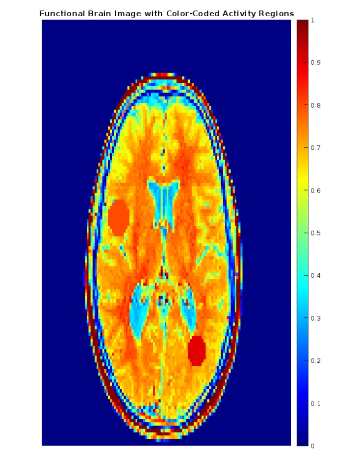

Functional Brain Image and Its Generation Using MATLAB
A functional brain image highlights regions in the brain that are actively engaged during various cognitive processes. This technique is widely used in functional magnetic resonance imaging (fMRI) and positron emission tomography (PET) for studying brain activity based on oxygen levels and blood flow.
Generating a Functional Brain Image Using MATLAB
To generate a functional brain image, we utilized MATLAB's built-in MRI dataset and simulated brain activity regions. These are the steps we followed:
- 1. Loading the MRI Dataset
We used MATLAB’s built-in MRI dataset, selecting a specific slice for overlaying functional activity regions on the anatomical brain structure. - 2. Simulating Functional Activity
Active regions in the brain were simulated using mathematical functions to create circular activity spots. These areas were color-coded to represent varying levels of brain activity. - 3. Overlaying Functional Data on Structural Image
The activity regions were overlayed on the structural image to visualize the relationship between brain anatomy and activity. - 4. Displaying the Functional Brain Image
Finally, the functional image was visualized using MATLAB’s image processing functions, creating a dynamic and color-coded display.
MATLAB Code to Generate the Functional Brain Image
% Load a sample MRI image from MATLAB's built-in dataset
load mri; % Built-in MRI data
D = squeeze(D); % Convert the 4D data to 3D
% Extract one slice of the brain from the dataset (same slice as structural)
functionalImage = mat2gray(D(:,:,15)); % Slice 15
% Simulate functional activity regions (e.g., active brain areas)
[xGrid, yGrid] = meshgrid(1:size(functionalImage, 2), 1:size(functionalImage, 1));
% Add functional activity in circular regions
activity1 = ((xGrid - 40).^2 + (yGrid - 60).^2) <= 30; % First activity region
activity2 = ((xGrid - 80).^2 + (yGrid - 100).^2) <= 20; % Second activity region
activity3 = ((xGrid - 50).^2 + (yGrid - 140).^2) <= 25; % Third activity region
% Assign activity levels (higher values for active regions)
functionalImage(activity1) = 0.8; % Activity level 1
functionalImage(activity2) = 0.9; % Activity level 2
functionalImage(activity3) = 0.85; % Activity level 3
% Apply a colormap to visualize activity levels in color
figure;
imagesc(functionalImage); % Display the functional image
colormap(jet); % Apply the "jet" colormap (blue to red gradient)
colorbar; % Add a colorbar to indicate activity levels
title('Functional Brain Image with Color-Coded Activity Regions');
axis off;
Functional Brain Image Visualization
The generated functional brain image is shown below, with the active regions in the brain highlighted based on their activity levels:
